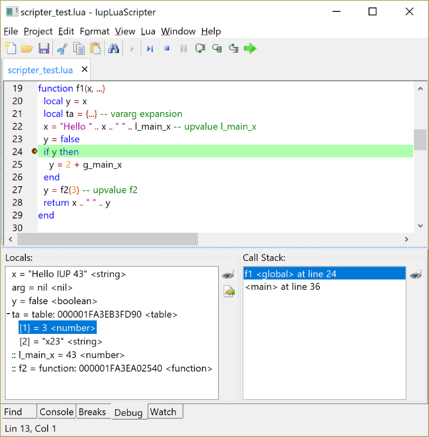

Similar to the IupLuaConsole, but much more powerful. Provides a complete editor interface, with the capability of debug the Lua script. It uses the IupLuaScripterDlg pre-defined dialog.
Download and installation is the same as the IupLuaConsole.

The Console tab allow the user to insert Lua commands and it captures the 'print' function output in the text log bellow. The up and down arrow keys display the command history. The command line can also enter a single name and if it is a Lua variable its value is printed. Special treatment is performed when printing tables and other special types.
The Break tab displays and edit a list of the breakpoints. Breakpoints can be added by clicking the left margin in its most right area (the left area can has line numbers and bookmarks) or in the Breaks tab using the "Toggle Breakpoint" at the caret position or using the "Add" button and writing a filename and a line number. Breakpoints (and bookmarks) are saved in the application configuration file. When lines are removed or added, breakpoints position are automatically updated. But breakpoints are not restored in undo operations.
The Watch tab display and edit a list of variables to be watched during debug.
The Debug tab, during debug, displays the stack and the local variables at the selected stack level. If another level is selected the local variables are updated accordingly. The actual level is not changed when a Call Stack list level is selected, only its local variables are updated in the Locals list. The list supports 3 types of local variables: variables declared as "local" and function parameters; Vararg parameters; and Upvalues (external local variables). Varargs don't have names, so we list them as if a table called "vararg" was created and each element of the table is listed separately. Upvalues are listed last with a ":: " prefix, used simply to distinguish them from the other variables. For now, a local variable can be changed only if it is a boolean, string or a number. Variable arguments (vararg) are displayed only for Lua version 5.2 or newer.
Lua code that are run from strings, instead of files, can also be debugged. But you can only set breakpoints when you step in the string and its contents are displayed in a new document. This temporary document is automatically closed when the debug is ended.
When a Project is used all Lua parameters and breakpoints are saved in the project file instead of the global configuration file.